Website
Beskrivelse
Arbejdsfiler og filformater til web. Jeg fokuserede på et historisk tilbageblik med personlige præferencer. Jeg brugte layoutdiagram og kodning i HTML. CSS til styling og layout - ud fra wireframe.
Process
Layout diagram
Rammer for opsætning af hjemmesiden

Jeg brugte layoutdiagram og kodning i HTML.
Dernæst oprettede jeg et grid-system, der dikterede, hvor kodningen skal stå.
I gridsystemet defineres order(hvor fx billederne skal stå), col(kolonne) og h1(overskrifter)
Wireferame
Ideskelet til hjemmesiden
.png)
CSS til styling og layout - ud fra wireframe.
Wireframen blev skitset for at vise, visiuelt, hvor billeder og tekst skal stå
Emnesite
Beskrivelse
Ophavsret, licenser og metadata. Dernæst kodning(HTML), tools(værktøjer), billedbehandling(photoshop, Illustrator og XD) og udvikling af mock-ups. En mock-up er en kladde. Jeg valgte at fokusere mit moodboard som futurisme og "rummet" Jeg researchede på fonte (skrifttype), billeder, design, opsætning (fx maginer, afsnit) og udtryk. Favicon (lille Logo/ ikon). Typografi af tekst og tekstlayout. Komposition/layout/grid af billeder. Billedstil/beskæring/farvejustering. Gestalt (ydre form) og kontraster. Dernæst udvælgelse og indarbejdning af sitet.
Process
Logo
Logo med tilpassede bogstaver

Favicondefinitionen bruges i udarbejdelse af dette Logo. Jeg researchede på fonte, billeder, design, og udtryk. Typografi af tekst og tekstlayout. Billedstil/beskæring/farvejustering. Gestalt og kontraster.
Moodboard
Inspirationsside til "rummet" og futorisme
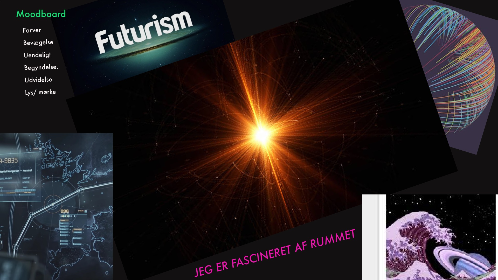Ophavsret og licenser. Anvendelse af tools, billedbehandling og udvikling af mock-ups. Jeg valgte at fokusere på futurisme og "rummet" i photoshop, moodboard og XD. Jeg brugte sqoosh til at finde billeder
Breakpoints
Tekst, der bruges til at adskille koder
/* Extra small devices (phones, 600px and down) */
Media querries
Media querries bruges til at indramme fx en kode og fx bestemme størrelsen på den specifikke kode
@media (max-width: 800px) { .banner { display: grid; grid-template-columns: 1fr 1fr 1fr; } }
Løsning
Beskrivelse
I opgaven “Løsning” var det målet at lave en side med tøj og finde fotostilarter. Observation: Man holder øje med en situation eller objekt og notér interaktionerne og hændelserne, der udspiller sig. Interview: Målet er at samle baggrundsviden og fakta omkring den interviewede person, så man kan stille de rigtige spørgsmål og få et nuanceret svar. Survey: metode til indsamling af viden om et bestemt emne på en gang. Jeg valgte observations metoden, og interviewede samme person. Personen klikkede rundt på en hjemmeside for at købe tøj. Jeg lavede en prototype 1 udfra UI kits i adobe XD. Struktur og navigation i sitet linkede til 4 andre sider. Moodboardet og styletilet blev lavet ud fra ide og struktur til mit shopconcept. Dernæst brugte jeg det til at finde min fotostil som blev udarbejdet i fotoshop. Jeg brugte copy og microcopy til at finde ud af, hvordan teksten bygges. Ud af dette arbejde opstod prototype 2, der eventuelt blev den færdige side, der skulle observeres, og som tilsidst mundede ud i en pitch til at løse den efterfølgende opgave.
Process
Heat map. Populære idéer HARAKIRI. Jeg kan godt lide billedopsætningen under menuen, og over der, hvor der står shop
Speed critique. HER CHOICE. Dette er en beskrivelse af motiv og kunstner
DIT DESIGN. Sko guide pop up
HARAKIRI. Billedet under menuen.
EVERYDAY.DK Farve valg til t-shirt
Din solutionsketch / papirs-prototype Solution sketch 2 eller en papirs-prototype.
Prototype
Første udgave
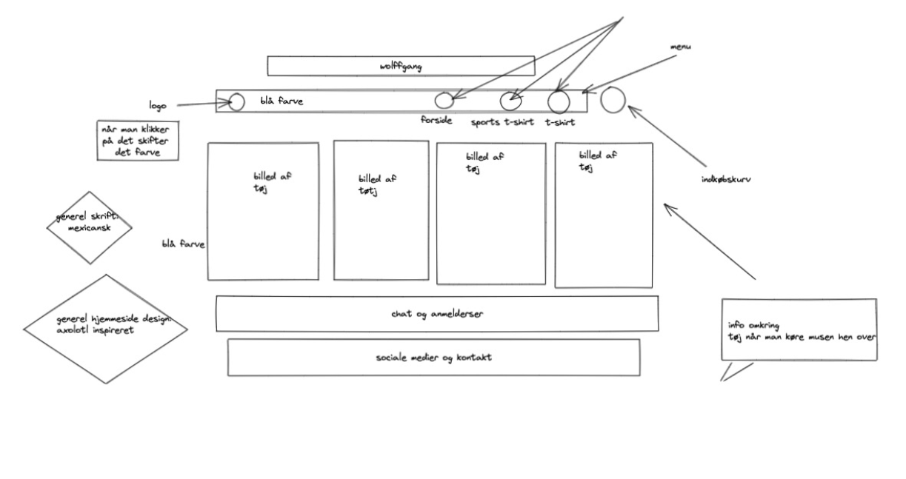Videreudvikling af første udgave
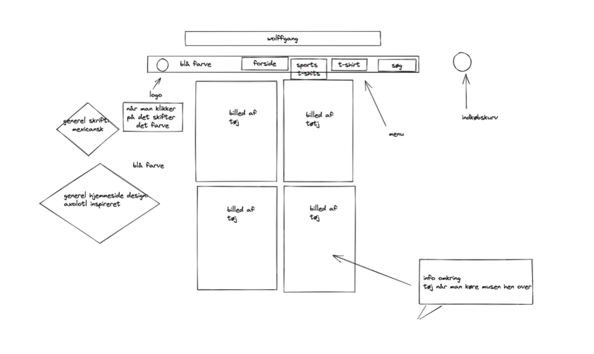Jeg lavede en prototype 1 udfra UI kits i adobe XD. Struktur og navigation linkede til 4 andre sider.
Det hele udmundede i en prototype 2, der eventuelt blev den færdige side,
Moodboard og styletile
Valg af tekst fonte og farver
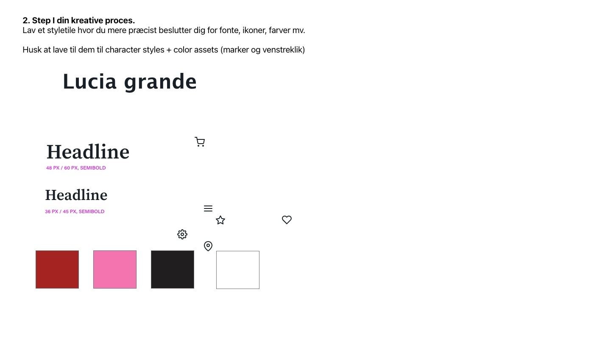Inspiration til udvælgelse af billeder og eller tekst
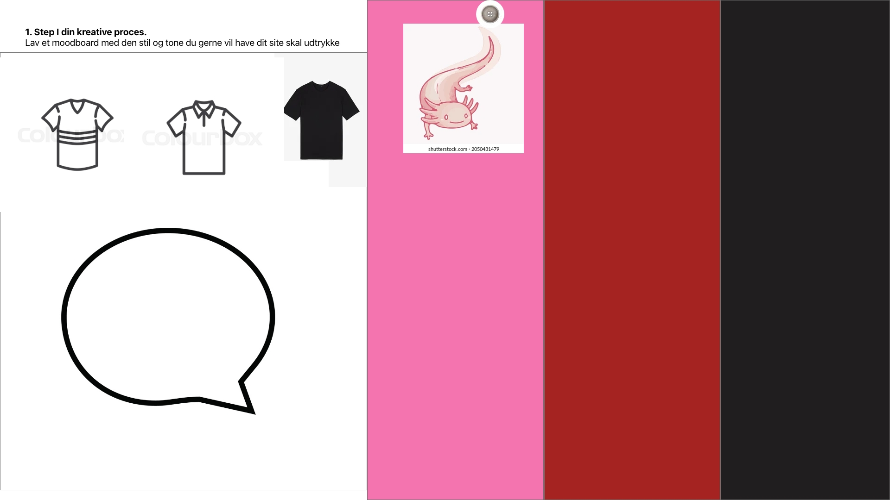Moodboardet og styletilet blev lavet ud fra ide og struktur til mit shopconcept.
Copy
En kort tekst, der gerne skulle fange folk
Min copy "Velkommen til Wolffgang - vi bestræber os på at være bæredygtige"
Microcopy
En længere tekst på en landingpage, der forklarer mere omkring virksomheden end hvad copien gør
Fotostil
Min fotostil fandt jeg på nettet ved at kopiere billeder fra nettet og ligge det over i et pages document.
Fotostil til din webshop
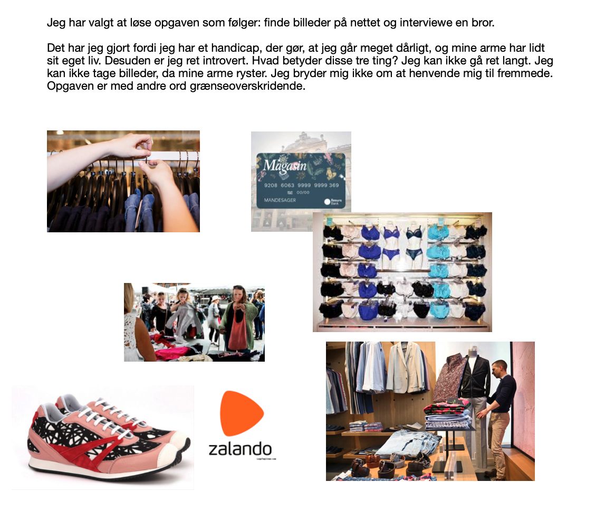Jeg udførte desktop-research for at få inspiration til en hjemmeside.
Jeg interviewede en person og udførte test på personen.
Jeg brugte exildraw til at sketche min hjemmeside.
Jeg blev inspireret af axolotlens udseende og farve og brugte inspirationen til tøjet og hjenmesiden.
Hjemmesiden handler om tøj.
Jeg fandt også billeder på hjemmesiden sqoosh.
Jeg lavede mit moodboard, styletile og generel hjemmeside layout i XD.
Pitch
Beskrivelse
I opgaven “pitch” var det målet at fremlægge “Løsning”. Min rolle var mundtlig fremlæggelse, og jeg anvendte Powerpoint. Det var vigtig for mig at prøve at fremlægge, da jeg fysisk har store udfordringer i formidlingen.
Process
1. Forside
Viser indholdet i pitchen
Webshop titel
Wolfgang
Link til prototype
Prototype
UX-designer
Mig selv
Illustration?
2. UX-research hoved:
User experience er erfaring man får ved at klikkede rundt på hjemmesider
3. Anslag
En hjemmeside med bæredygtige t-shirt
4. Status
Mangler info omkring tøjet
Den er mere organiseret
Der er en mere fokuseret stil
5. Udfordring
At hjemmeside prototypen lever op til den skitserede.
6. Informationer og indsigter fra researchen
Ifølge Danmarks Naturfredningsforening er konventionel bomuld fyldt med sprøjtegift og indeholder giftige farvestoffer, som kan optages igennem huden.
7. UX/UI-design krop: løsning - ide (koncept og kreativ idé) og XD-prototype
UI, user interface, er designet på hjemmesiden
8. Webshop
Personer, der gerne vil ud med et budskab (eventuelt humoristisk)(Organisationer)
9. Produkter
T-shirts
Målgruppe
10. USP (unique selling point)/ salgsargument
Bestræber os på at sælge t-shirts af unik kvalitet
11. Produktegenskaber og fordele for kunder
Bomuld
Økologisk
Bæredygtig
Designproces: skitse, moodboard, style tile
Gennemgang af XD-prototypen
Uddybning af visuelt indhold og copy
Jeg har valgt at designe siden efter et dyr, der hedder axolotl.
Dyret kan findes i forskellige farver, brun, sort, albino, men den mest udbredte farve lyserød. Den kan hele sine egne lemmer og undgår at ændre form.
Velkommen til Wolffgang. Vi bestræber os på at være bæredygtige. Afspejlet i axolotlen, hvis habitat er truet.
12. 3.UX-test hale:
UX, user experience test, t test af personen ved at give opgaver
13. Konklusion og perspektiver.
Jeg skal blive bedre til at holde mig til min skitse.
14. Test (refleksion over tænke-højt-test).
The Five Act interview.
Friendly welcome.
Hej test-person, jeg takker dig for at deltage i den her test. Du skal bare vide, at jeg tester ikke dig, men mit design af hjemmeside.
Context questions Hvor gammel er du? Hvor bor du? Hvad har du af interesse? Hvad går du med af tøj? Går du op i bæredygtighed? Hvordan foretrækker du at shoppe?
15.Fremtidsperspektiver?
Få inkorporeret dyrets egenskaber og udseende i selve produktet.
Pitchen består af min løsning
Jeg brugte Power-Point til at lave min pitch
Animation
Beskrivelse
I opgaven “animation” var målet et website med et interaktivt animeret spil af egen produktion. Dertil en dokumentation. Jeg finder min egen rolle i designet, den interaktive proces, beslutningsprocessen og den forståelse, der skal være på plads omkring konventioner, prototypisk og testning. Der skal testes for brugeroplevelse, findes fotostil og billedbehandles i planlægning og produktion af indhold. Det var en selvstændig opgave, hvor jeg brugte følgende værktøjer: .mp3, .svg, CSS, JavaScript og Illustrator. Jeg lærte at gå fra ide til skitse og udvikling. Udover figurelementer, baggrundsdesign og meget mere fra illustrator, så også genbrug fra Tema 3. Jeg lærte endelig at kunne udvikle mit eget spil. Javasciptet udfordrede mig en del, men jeg havde måske stillet for store krav til mig selv.
Spillet
16/9 format
Retningslinjer
Tre faktorer
Tre faktorer, der fortæller, hvor mange point man har
piont
liv
tid
Slutninger
Baggrundsskærm til enten vinder eller taber i spillet, SVG

Process
Anvendelse af statemachine- og layoutdiagram for at få spillet til at fungere.
Første design

Layoutdigram

Andet design

State-machine-diagram
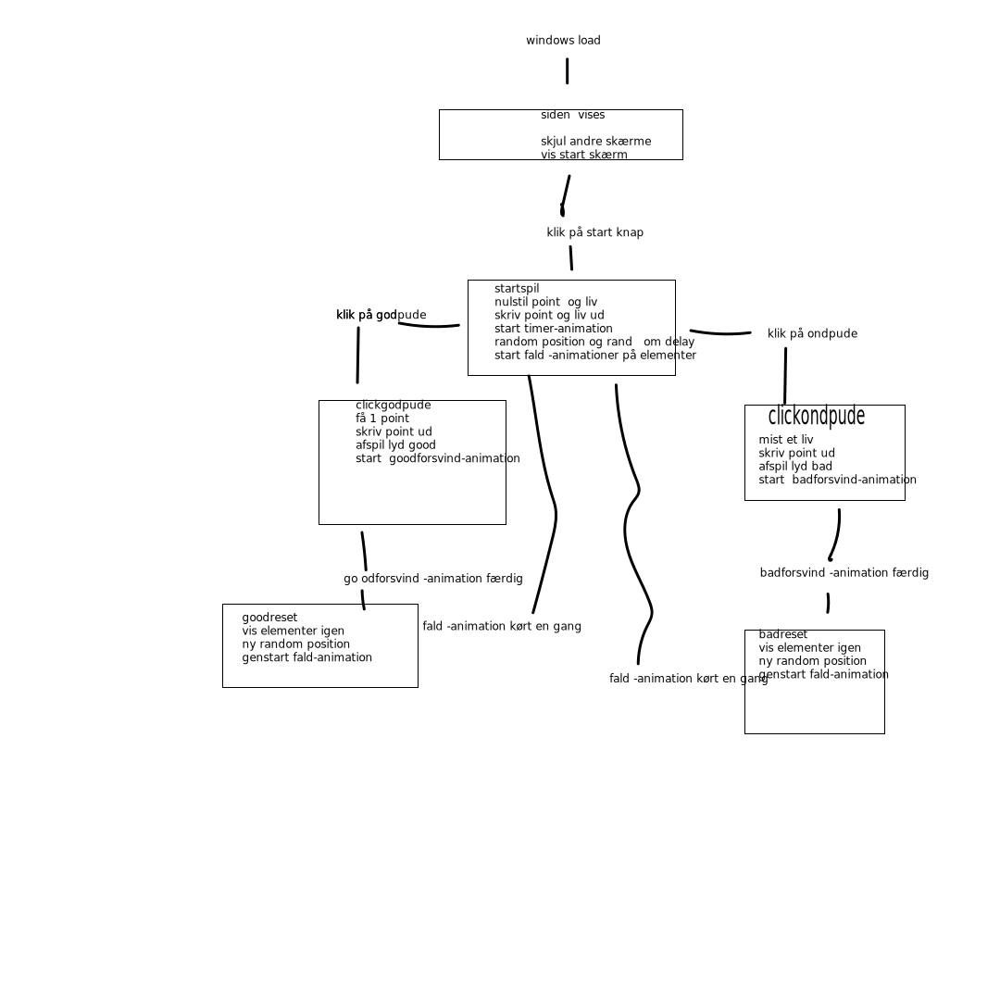Dokumentation
SVE-filer til spillet
Forskærm
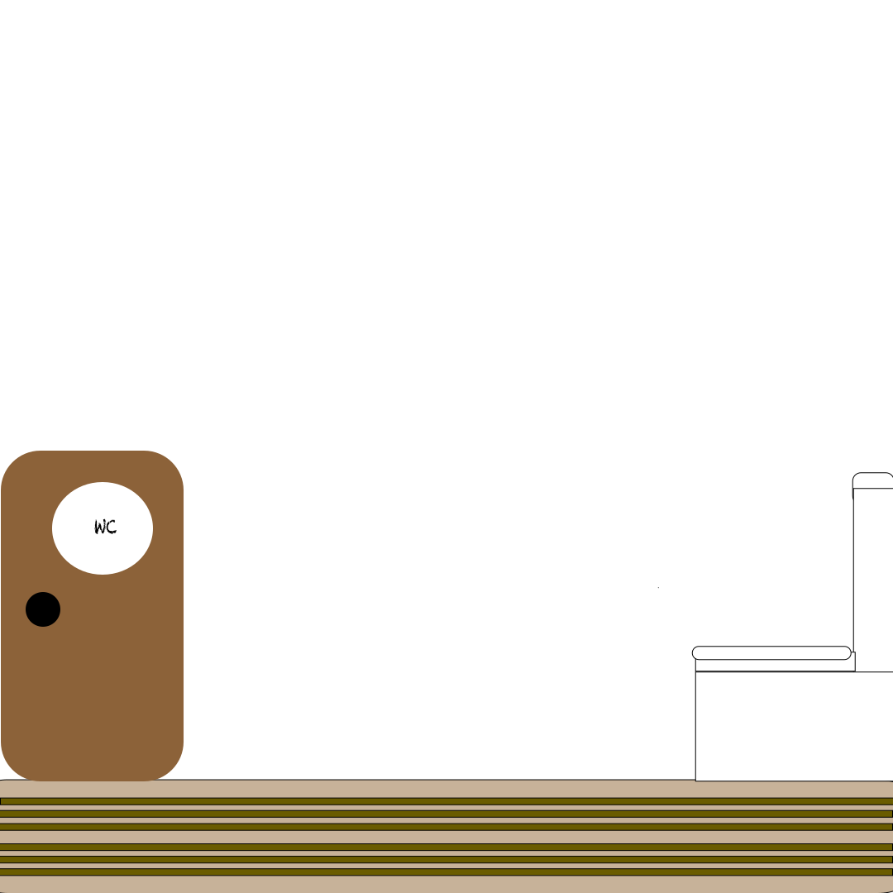Start skærm
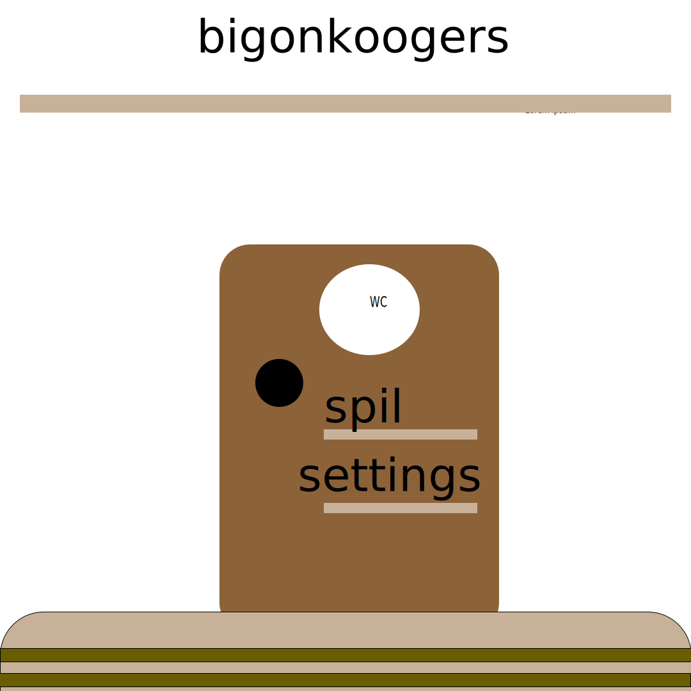Heart

Design
Figurdesign
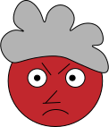Baggrund
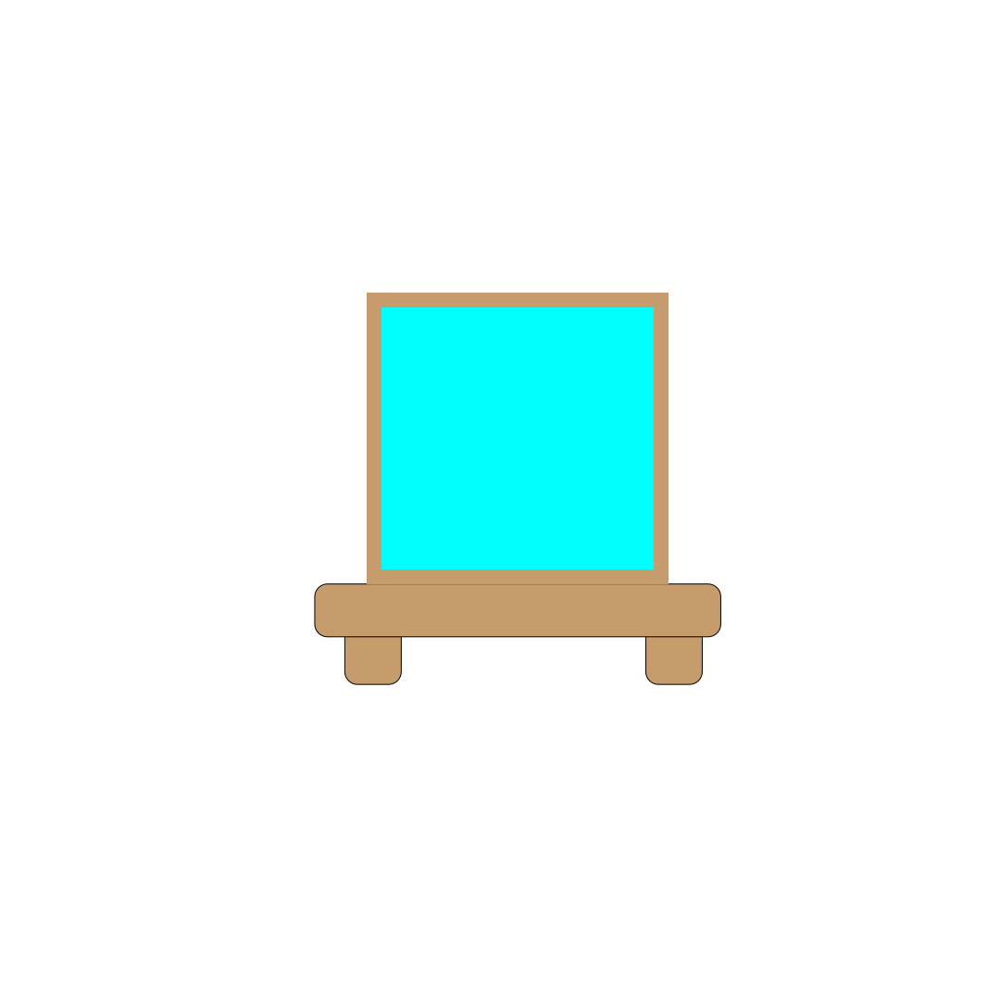Jeg lavede en test, hvor jeg skulle sammensætte tre slags ord, og hvert ord skulle komme fra hver sin kolonne.
Jeg landede på svigermor-skider-puder.
Mine designs blev tegnet i Illustrator.
Derefter blev designs konverteret til svg filer.
designs skal bruges bl.a. til baggrunden i mit spil.
Jeg brugte state-machine-diagramet og layoutdiagramet til at få struktur over spillet.
Spillet er en del af en hjemmeside.
Jeg valgten at gå med stilen flat-game design.
Pilotsite
Beskrivelse
I opgaven “pilotsite” var målet en website, der præsenterer en video. Det var en selvstændig opgave, der blev lavet på baggrund af gruppeinterviews. Jeg anvendte bl.a. HTML, YouTube, layoutdiagram, webfront, VSS og premiere. Jeg lærte bl.a. om filformater, videoredigering, videokodning, formidling, videoplatforme, storyboard, interviewstil, klippeteori og b-Roll.
Process
Anvendt font proxima_regular, format woff
@font-face { font-family: "proxima_novaregular"; src: url("proxima_nova_font-webfont.woff") format("woff"); font-weight: normal; font-style: normal; }
Layoutdiagram
Videooptagelse fra et studie på Amager, MP4 fil, blev lagt på youtube.
Vi brugte to telefoner og en mikrofon.
Vi tog billeder af ting, der skulle bruges i videon.
Vi skulle bruge billedformatet wepd.
Redesign af American Pie Company
Læringsmål
Gruppeopgave. Jeg anvendte bl.a. HTML, YouTube, layoutdiagram, webfront, CSS og premiere. Jeg lærte bl.a. om filformater, videoredigering, videokodning, formidling, videoplatforme, storyboard, interviewstil, klippeteori og b-Roll.
Process
Videoen blev filmet i butikken på Skindergade
Vi brugte to telefoner og mikrofon til optagelse
Video af interviewet med Dorte Prip, MP4 fil
Videoen blev redigeret i audition
Wireframe
Et eksempel på vores wireframe af American Pie`s redesignede hjemmeside.
_Side_1.jpg)
Sketch
Eksempel på Sketch til vores redesign af hjemmesiden. Dette er et udpluk af "håndarbejde"

Proces
Vi brugte et procesdokument til redesigne og researche American Pies hjemmeside.
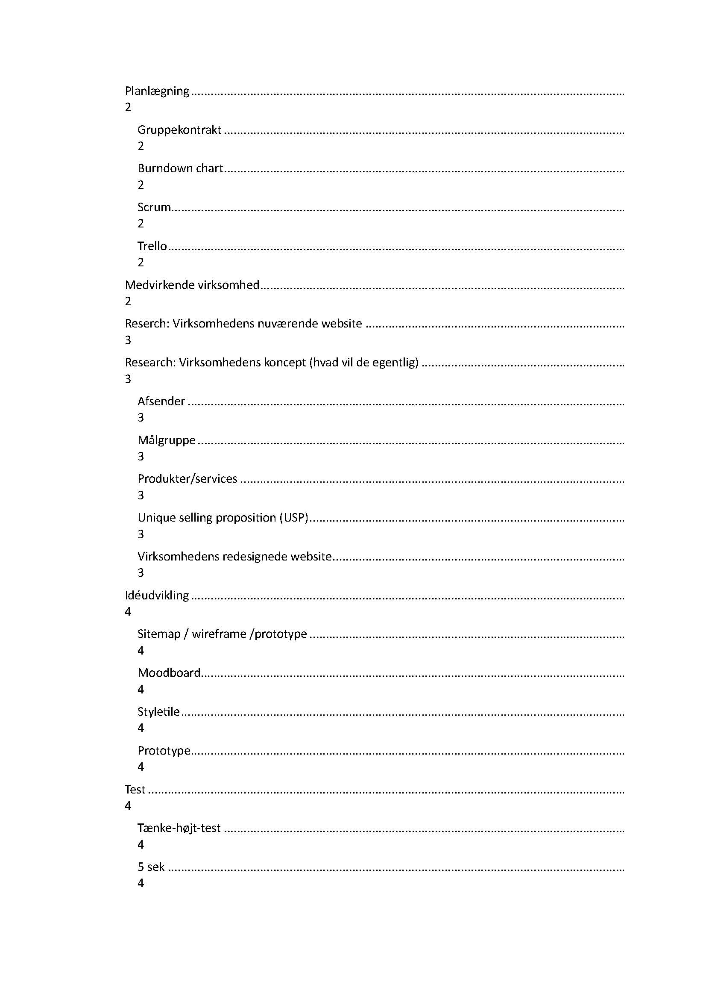 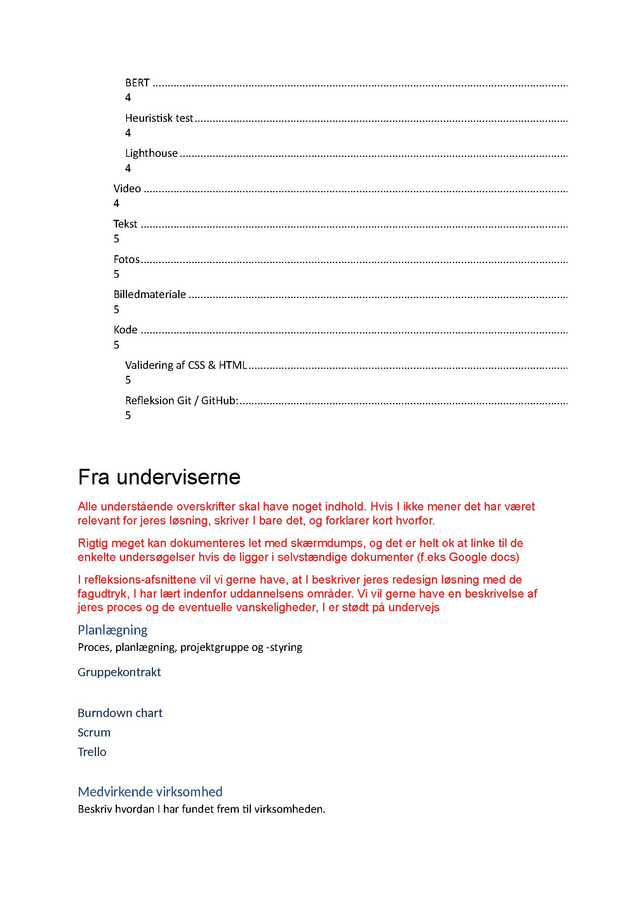 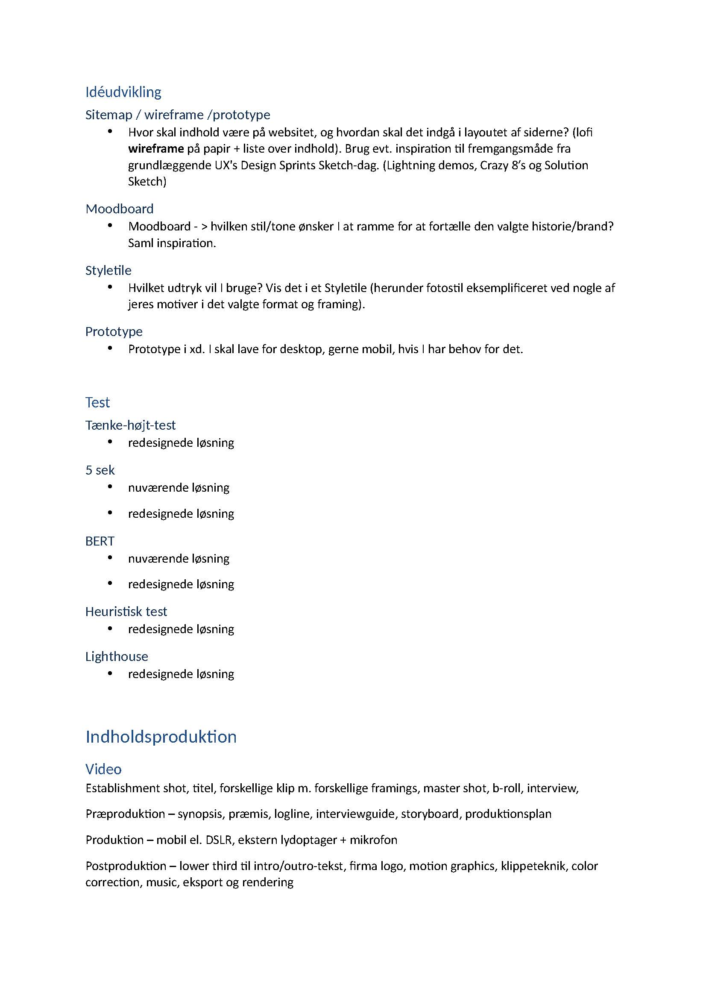
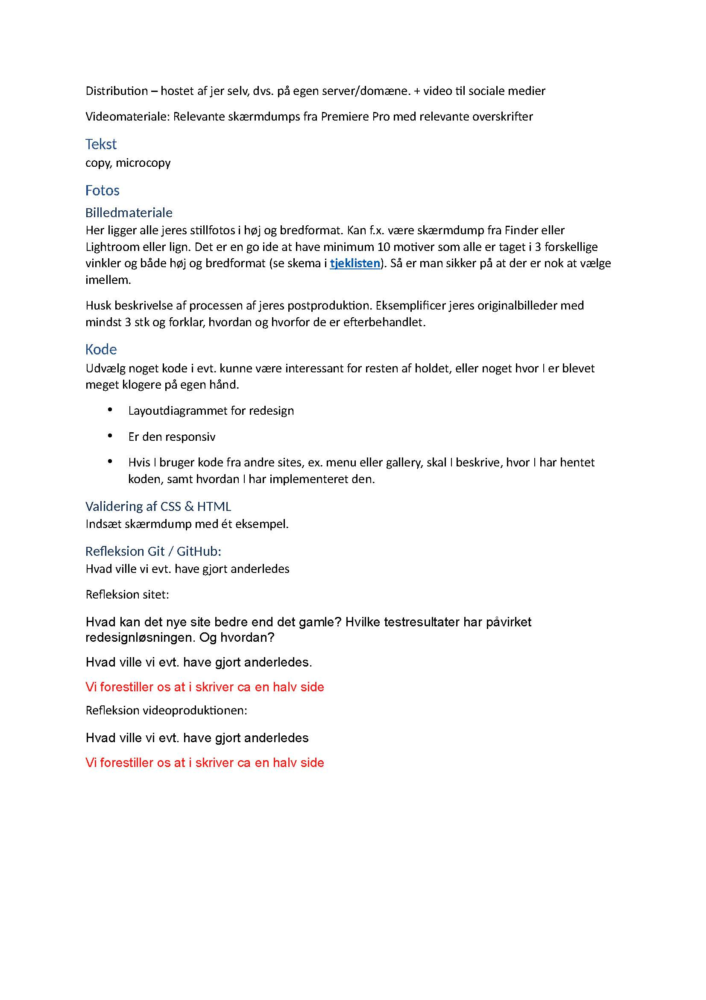
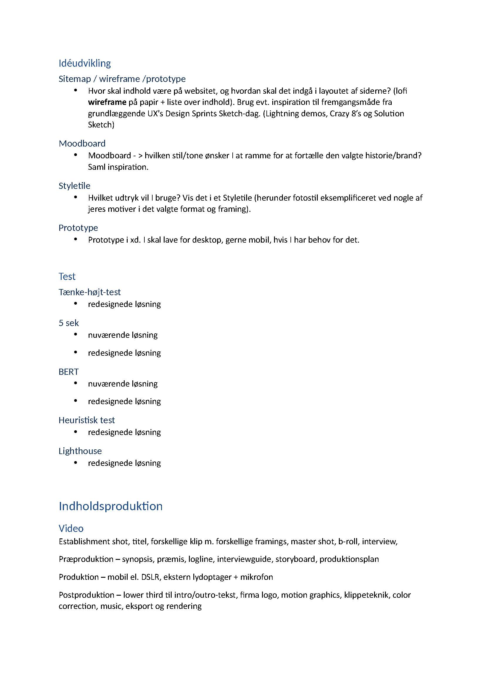
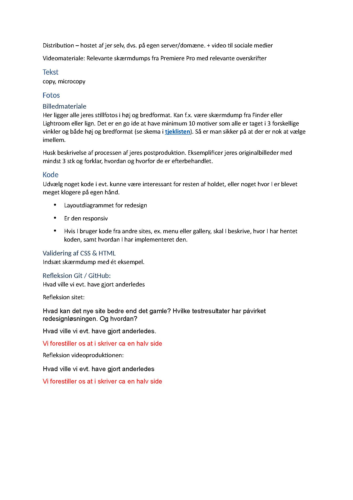
Reflektion
Jeg har anvendt mine gamle opgaver til at dokumentere processen og beskrive tillærte færdigheder. Jeg har været udfordret på min fysik, og har undervurderet den tid jeg gerne ville have brugt på særligt layout. Jeg synes efterhånden er det er sjovt at kunne se processen i kodningen HTLM og CSS - jeg kan følge en proces, når jeg spiller computer. Det vil være rart at kunne lære mere om Javascript. Jeg erfarede sent i processen, at det er muligt at grid-definere udfra mobilstørrelse og når det er på plads udbygge til større skærme. Designprocessen ville jeg gerne bruge mere tid på for det er faktisk det jeg synes rigtig godt om. Den største udfordring er struktur; jeg har meget brug for en sparringspartner..